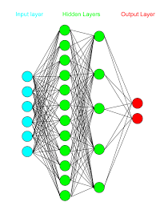

An investigation of how multi-layer perceptrons work and what issues they can solve. Its structure resembles that of the human nervous system.If a hidden layer mistake exists, no information on how to remedy it is provided. The brain, neurons, and dendrites are all parts of the human neural system. This technique is similar to ANNs. An input layer, a hidden layer, and an output layer make up a neural An examination of multi-layer perceptrons and their applications. Its structure is similar to the nervous system. If a hidden layer error occurs, no solution supplied. Human neurological system includes brain, neurons, and dendrites. Similar to ANNs. A neural network has three layers: input, hidden, and output.

Artificial neural networks can be divided into two categories. Artificial neural networks can be divided into two types: single-layer artificial neural networks and multi-layer artificial neural networks. In single-layer artificial neural networks, there is only a forward feed. On the other approach, a multilayer neural network has both forward and feedback signals. Forward feeding error rates determined. In the feedback event, the error propagates backward. This method performed until either the specified number of iterations completed or the error rate reduces to zero. A multilayer neural network used to solve XOR problems. In XOR problems, there is an input value and an output value. The number of interlayers in a multilayer perceptron is unknown.
Each middleware and input layer given a weight. The product of the input data and the weights used to calculate error rates. Linear problems that multilayer neural networks fail to solve. It’s quite good at dealing with non-linear problems. This area also includes nonlinear concerns such as XOR problems. It easily solves multi-layer neural network classification problems. The algorithm implemented by multiplying the weights by the data in the input layer. The data multiplied by the weights in the middle layer. The difference between the result and the data in the output layer calculated.
The error multiplied to two, resulting in new weights. No errors or the specified number of iterations returned by this method. The classification success then calculated. After that, the classification success calculated.
You can find a lot of information on the subject here.
Please click for more information.